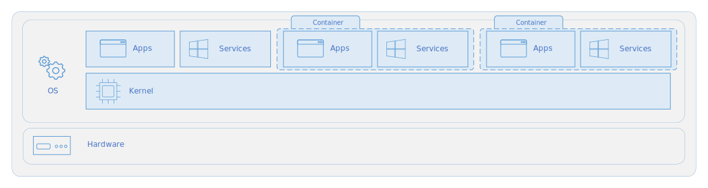
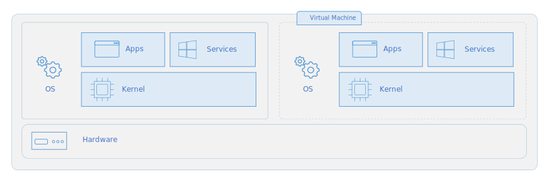

Container 运行操作系统的用户模式部分（不包括内核）

Virtual Machine 运行的是完整的操作系统（包括内核），因此需要更多的系统资源（CPU、内存和存储）

docker.io 和 docker-ce
Docker.io 是由Debian团队维护的Docker版本，
Docker CE（Docker Community Edition）是Docker官方维护的版本, 需要添加仓库，添加GPG密钥
apt-get install --no-install-recommends --yes --force-yes apparmor docker.io wget
systemctl start apparmor
systemctl stop docker.service
systemctl stop docker.socket
systemctl start docker
docker pull busybox:latest
Docker buildx
19.03+ 版本开始可以使用 docker buildx build 命令利用 BuildKit 构建镜像
# build x64
docker build -t ubuntu .
# crossbuild arm64
docker buildx build --platform linux/arm64 -t ubuntu-arm64 .
yum install docker-buildx
sudo systemctl start docker
sudo usermod -aG docker $USER
$ sudo docker version
Client:
Version: 27.3.1
$ docker buildx version
github.com/docker/buildx 0.17.1 1.fc41
$ sudo docker buildx ls
NAME/NODE DRIVER/ENDPOINT STATUS BUILDKIT PLATFORMS
default* docker
\_ default \_ default running v0.16.0 linux/amd64, linux/amd64/v2, linux/amd64/v3, linux/arm64, linux/riscv64, linux/ppc64, linux/ppc64le, linux/s390x, linux/386, linux/mips64le, linux/mips64, linux/loong64, linux/arm/v7, linux/arm/v6
Github Actions
## 其他默认，只修改jobs部分
jobs:
docker:
runs-on: ubuntu-latest
steps:
- name: Checkout
uses: actions/checkout@v3
- name: Set up QEMU
uses: docker/setup-qemu-action@v3
- name: Set up Docker Buildx
uses: docker/setup-buildx-action@v3
- name: Login to Quay.io
uses: docker/login-action@v3
with:
registry: quay.io
username: ${{ secrets.QUAY_USERNAME }}
password: ${{ secrets.QUAY_PASSWORD }}
- name: Build and push
uses: docker/build-push-action@v5
with:
context: .
platforms: linux/amd64,linux/arm64
push: true
tags: quay.io/slackman/osarch:latest,quay.io/slackman/osarch:${{ github.ref_name }}
outputs: type=image,name=target
Anolis rootfs
FROM scratch
LABEL \
org.opencontainers.image.title="Anolis OS Base Image" \
org.opencontainers.image.vendor="Anolis OS 8.9" \
org.opencontainers.image.licenses="Mulan PSL v2" \
org.opencontainers.image.created="2024-04-25" \
maintainer="OpenAnolis Cloud Native SIG"
ADD AnolisOS8.9-base-amd64-20240425.tar.xz /
RUN ln -sf /usr/share/zoneinfo/Asia/Shanghai /etc/localtime && echo Asia/Shanghai > /etc/timezone
ENV TZ=Asia/Shanghai
CMD ["/bin/bash"]
Ubuntu rootfs
http://cdimage.ubuntu.com/ubuntu-base/releases/22.04/release/
FROM scratch
LABEL \
org.opencontainers.image.title="Ubuntu 22.04 LTS (Jammy Jellyfish)" \
org.opencontainers.image.release="jammy" \
org.opencontainers.image.architecture="amd64" \
org.opencontainers.image.variant="default" \
org.opencontainers.image.created="20250320" \
maintainer="localhost"
ENV DEBIAN_FRONTEND=noninteractive \
TZ=Asia/Shanghai \
LANG=en_US.UTF8 \
LC_ALL=en_US.UTF8 \
LANGUAGE=enUS:en
ADD ubuntu-base-22.04-base-amd64.tar.gz /
ADD sources.list /etc/apt/sources.list
RUN apt-get update && apt-get install -y --no-install-recommends tzdata language-pack-en \
&& ln -snf /usr/share/zoneinfo/$TZ /etc/localtime \
&& echo $TZ > /etc/timezone \
&& dpkg-reconfigure -f noninteractive tzdata
RUN apt-get update && apt-get install -y \
build-essential less wget curl file \
&& apt-get clean && rm -rf /var/lib/apt/lists/*
CMD ["/bin/bash"]
sources.list
deb http://192.168.1.99:8081/repository/ubuntu/ jammy main restricted universe multiverse
deb http://192.168.1.99:8081/repository/ubuntu/ jammy-security main restricted universe multiverse
deb http://192.168.1.99:8081/repository/ubuntu/ jammy-updates main restricted universe multiverse
linux/amd64
FROM scratch
LABEL \
org.opencontainers.image.title="Ubuntu 22.04 LTS (Jammy Jellyfish)" \
org.opencontainers.image.release="jammy" \
org.opencontainers.image.architecture="amd64" \
org.opencontainers.image.variant="default" \
org.opencontainers.image.created="20250320" \
maintainer="localhost"
ENV DEBIAN_FRONTEND=noninteractive
ADD ubuntu-base-22.04-base-amd64.tar.gz /
RUN sed -i s@/archive.ubuntu.com/@/mirrors.aliyun.com/@g /etc/apt/sources.list; \
sed -i s@/security.ubuntu.com/@/mirrors.aliyun.com/@g /etc/apt/sources.list; \
apt-get -q update; \
apt-get install -qy --no-install-recommends ca-certificates curl tzdata libssl-dev zlib1g-dev; \
ln -fs /usr/share/zoneinfo/Asia/Shanghai /etc/localtime; \
echo "Asia/Shanghai" > /etc/timezone; \
rm -rf /var/lib/apt/lists/*
CMD ["/bin/bash"]
linux/arm64
FROM scratch
LABEL \
org.opencontainers.image.title="Ubuntu 22.04 LTS (Jammy Jellyfish)" \
org.opencontainers.image.release="jammy" \
org.opencontainers.image.architecture="arm64" \
org.opencontainers.image.variant="default" \
org.opencontainers.image.created="20250320" \
maintainer="localhost"
ENV DEBIAN_FRONTEND=noninteractive
ADD ubuntu-base-22.04-base-arm64.tar.gz /
RUN sed -i s@/ports.ubuntu.com/@/mirrors.aliyun.com/@g /etc/apt/sources.list; \
apt-get -q update; \
apt-get install -qy --no-install-recommends ca-certificates curl tzdata libssl-dev zlib1g-dev; \
ln -fs /usr/share/zoneinfo/Asia/Shanghai /etc/localtime; \
echo "Asia/Shanghai" > /etc/timezone; \
rm -rf /var/lib/apt/lists/*
CMD ["/bin/bash"]
FROM Ubuntu
FROM ubuntu:22.04
LABEL \
org.opencontainers.image.title="OpenNebula 6.10" \
org.opencontainers.image.vendor="Ubuntu22 build system" \
org.opencontainers.image.licenses="Apache" \
org.opencontainers.image.created="2025-04-09" \
maintainer="localhost"
ENV DEBIAN_FRONTEND=noninteractive \
TZ=Asia/Shanghai \
LANG=en_US.UTF8 \
LC_ALL=en_US.UTF8 \
LANGUAGE=enUS:en
ADD sources.list /etc/apt/sources.list
RUN apt-get update && apt-get install -y --no-install-recommends tzdata \
&& ln -snf /usr/share/zoneinfo/$TZ /etc/localtime \
&& echo $TZ > /etc/timezone \
&& dpkg-reconfigure -f noninteractive tzdata
# Install build base
RUN apt-get install --no-install-recommends --yes \
language-pack-en build-essential vim less git wget curl \
&& apt-get clean && rm -rf /var/lib/apt/lists/*
CMD ["/bin/bash"]
FROM ubuntu:22.04
LABEL \
org.opencontainers.image.title="OpenNebula 6.10" \
org.opencontainers.image.vendor="Ubuntu22 build system" \
org.opencontainers.image.licenses="Apache" \
org.opencontainers.image.created="2025-04-09" \
maintainer="localhost"
ENV DEBIAN_FRONTEND=noninteractive \
TZ=Asia/Shanghai \
LANG=en_US.UTF8 \
LC_ALL=en_US.UTF8 \
LANGUAGE=enUS:en
ADD sources.list /etc/apt/sources.list
RUN apt-get update && apt-get install -y --no-install-recommends tzdata \
&& ln -snf /usr/share/zoneinfo/$TZ /etc/localtime \
&& echo $TZ > /etc/timezone \
&& dpkg-reconfigure -f noninteractive tzdata
# Install build base
RUN apt-get install -y language-pack-en \
build-essential less wget curl file vim \
bc binutils bison dwarves flex gcc git gnupg2 gzip \
libelf-dev libncurses5-dev libssl-dev make openssl pahole perl-base rsync tar xz-utils \
&& apt-get clean && rm -rf /var/lib/apt/lists/*
CMD ["/bin/bash"]
FROM Fedora
FROM quay.io/fedora/fedora:41
LABEL \
org.opencontainers.image.title="Fedora OS 41" \
org.opencontainers.image.release="fc41" \
org.opencontainers.image.architecture="amd64" \
org.opencontainers.image.variant="default" \
org.opencontainers.image.created="20250320" \
maintainer="localhost"
ENV TZ=Asia/Shanghai \
LANG=en_US.UTF8 \
LC_ALL=en_US.UTF8 \
LANGUAGE=enUS:en
# base
ADD http://mirrors.aliyun.com/repo/fedora.repo /etc/yum.repos.d/aliyun.repo
RUN ln -snf /usr/share/zoneinfo/$TZ /etc/localtime \
&& echo $TZ > /etc/timezone \
&& find /etc/yum.repos.d -name "fedora*" | sed -e 'p;s/repo$/repo.disable/' | xargs -n2 mv \
&& yum install -y glibc-langpack-zh glibc-langpack-en
# base-devel
RUN dnf install @development-tools cmake ninja-build clang -y \
&& yum install less wget curl file -y \
&& yum clean all && rm -rf /var/cache/yum/*
CMD ["/bin/bash"]
FROM Alpine
FROM docker.io/alpine:3.11
LABEL \
org.opencontainers.image.title="OpenWrt External ToolChain" \
org.opencontainers.image.vendor="Alpine build system" \
org.opencontainers.image.licenses="Apache" \
org.opencontainers.image.created="2025-04-09" \
maintainer="localhost"
ENV DEBIAN_FRONTEND=noninteractive \
TZ=Asia/Shanghai \
LANG=en_US.UTF8 \
LC_ALL=en_US.UTF8 \
LANGUAGE=enUS:en
ADD repositories /etc/apk/repositories
#RUN apk update && apk add musl-locales tzdata \
# && ln -snf /usr/share/zoneinfo/$TZ /etc/localtime \
# && echo $TZ > /etc/timezone \
# && apk --no-cache add build-base cmake clang clang-dev make gcc g++ libc-dev linux-headers
RUN apk update && apk add musl-locales tzdata \
&& ln -snf /usr/share/zoneinfo/$TZ /etc/localtime \
&& echo $TZ > /etc/timezone \
&& apk add build-base
RUN apk add argp-standalone asciidoc bash bc binutils bzip2 cdrkit coreutils \
diffutils elfutils-dev findutils flex musl-fts-dev g++ gawk gcc gettext git \
grep gzip intltool libxslt linux-headers make musl-libintl musl-obstack-dev \
ncurses-dev openssl-dev patch perl python3-dev rsync tar \
unzip util-linux wget zlib-dev
CMD ["/bin/ash"]
repositories
https://mirrors.ustc.edu.cn/alpine/v3.21/main
https://mirrors.ustc.edu.cn/alpine/v3.21/community
About Links
https://www.cnblogs.com/dazhoushuoceshi/p/7066041.html
https://docs.docker.net.cn/build/buildkit/